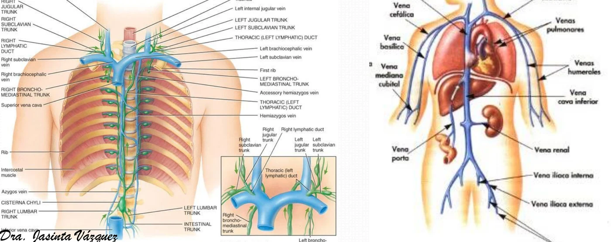
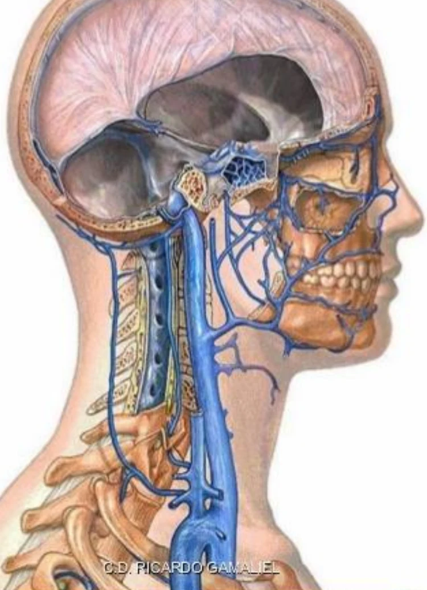
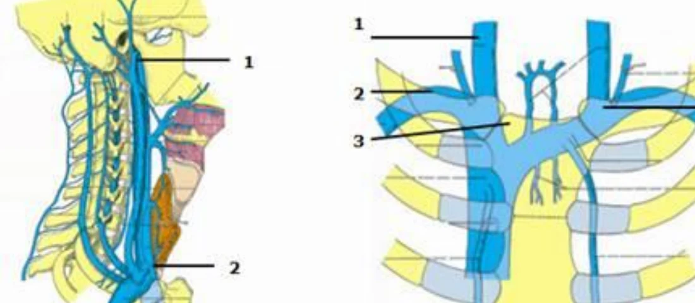
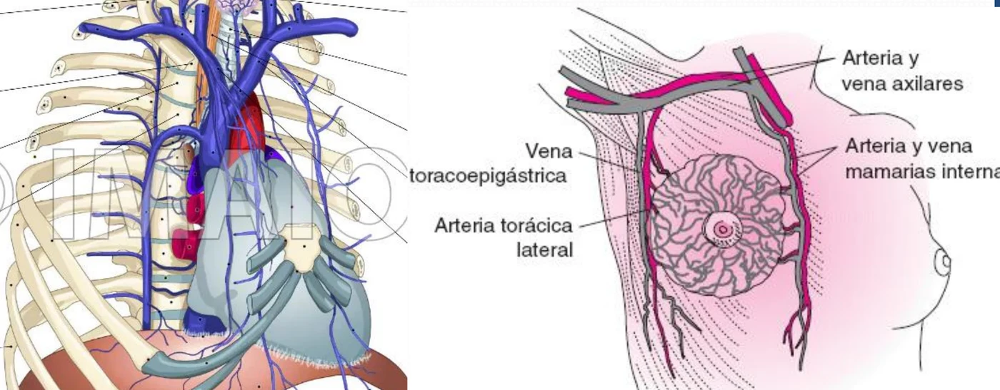
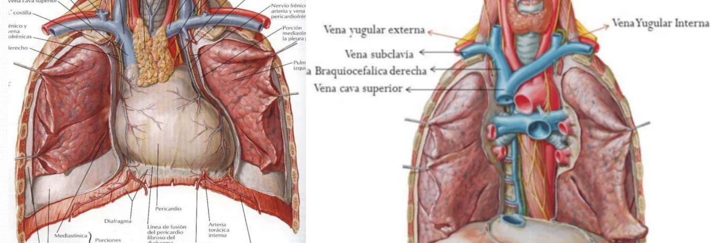
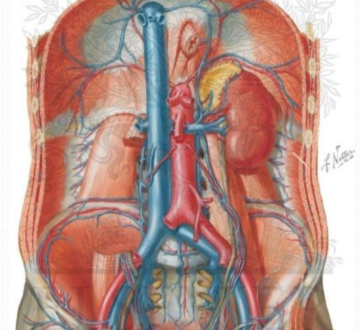
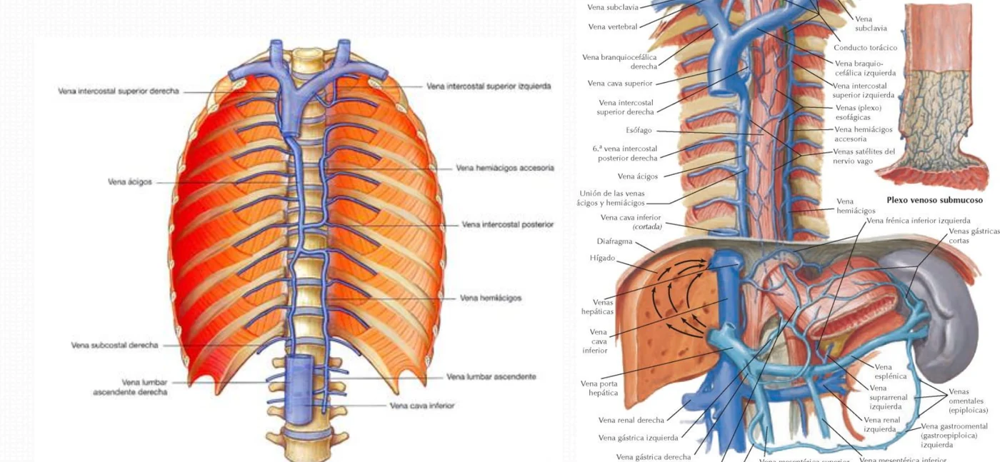
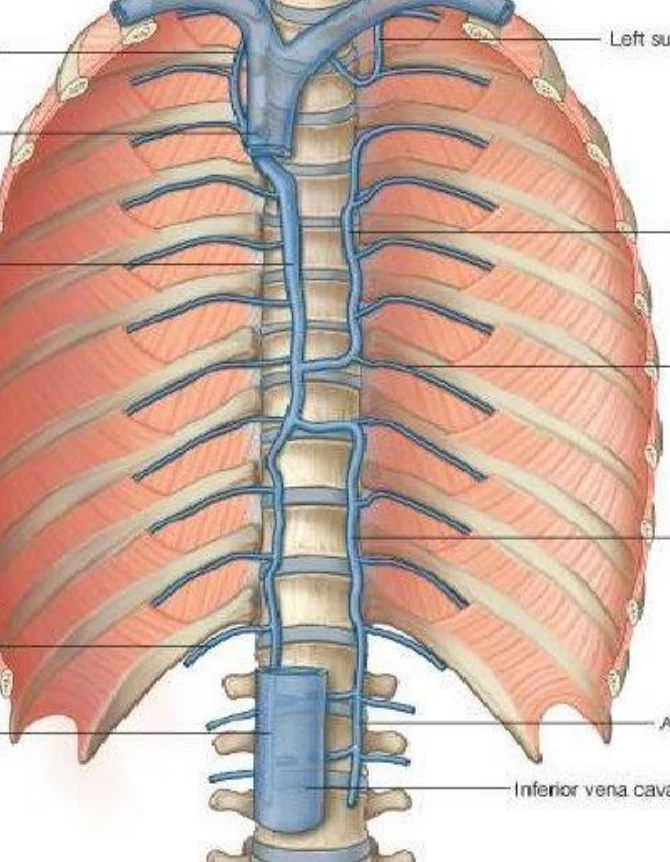

ClinicusMed · Dossiê Clinicus — Padrão de Excelência

| Sistema | Território | Sangue |
|---|---|---|
| VCS | Cabeça, pescoço, membros superiores | Carboxigenado (desoxigenado) → átrio direito |
| VCI | Abdome, pelve, membros inferiores | |
| Veias próprias do coração | Desembocam no átrio direito | |
| Veias pulmonares | Terminam no átrio esquerdo | Oxigenado |
Ao lado dos dois sistemas cavos existem vias extras: as veias lombares ascendentes, as veias ázigos e a circulação porta hepática (vísceras → sistema porta → fígado → VCI).

| Veia | Observação |
|---|---|
| Jugular interna | Principal |
| Jugular externa | Superficial |
| Jugular anterior | Superficial |
| Tireóideas inferiores | Drenam a tireoide |
| Vertebral | Acompanha a artéria vertebral |
| Jugular posterior | — |

São duas, direita e esquerda. Origem: união da veia jugular interna com a subclávia. A união das duas braquiocefálicas forma a VCS.
| Aspecto | Braquiocefálica direita | Braquiocefálica esquerda |
|---|---|---|
| Trajeto | Curta e quase vertical | Oblíqua medial, quase horizontal; 5 cm, um pouco mais volumosa que a direita |
| Anterior | 1ª cartilagem costal e manúbrio | 1ª articulação esternocostal |
| Posterior | Medial: tronco braquiocefálico | Carótida comum esquerda, traqueia e tronco braquiocefálico |
| Lateral / Inferior | Nervo frênico, pleura, pulmão, linfonodos paratraqueais direitos | Inferior: arco aórtico |
| Afluentes | Cervical profunda, vertebral, intercostais, ducto linfático direito | Cervical profunda, vertebral, ducto torácico, torácicas internas, pericardiofrênicas, tímicas, tireóidea inferior, intercostais superiores (veia de Braine, inconstante) |

| Aspecto | Descrição |
|---|---|
| Nome | Também chamadas mamárias internas; duas (direita e esquerda) |
| Relação | Satélites das artérias homônimas |
| Número | Única, às vezes dupla |
| Término | Direita: veia braquiocefálica direita ou VCS · Esquerda: braquiocefálica esquerda |
| Via colateral | Participam da via intercava colateral anteromedial pela união com as veias epigástricas |

| Aspecto | Descrição |
|---|---|
| Origem | União das duas veias braquiocefálicas, no mediastino superior |
| Trajeto | Vertical; passa à frente da raiz pulmonar direita, penetra no pericárdio e termina no AD por um orifício avalvular |
| Medidas | 6 a 8 cm de comprimento; calibre 20 a 22 mm |
| Porção | Relações |
|---|---|
| Extrapericárdica | Anterior: parede torácica · Lateral: nervo frênico, pleura e pulmão · Medial: arco aórtico · Posterior: veia ázigos · Acima: traqueia, vago, linfonodos paratraqueais · Abaixo: brônquio, artéria pulmonar e veia pulmonar superior direita |
| Intrapericárdica | Anterior: saco fibroso · Lateral: saco fibroso e pleura · Medial: arco aórtico · Posterior: artéria pulmonar direita |
Afluentes: veia ázigos (e por ela as veias bronquiais direitas, mediastinais, esofágicas, pericárdicas e frênicas superiores direitas).

| Aspecto | Descrição |
|---|---|
| Origem | União das duas veias ilíacas comuns, em L4–L5 |
| Trajeto | Vertical, no lado direito da coluna; atravessa o diafragma pelo forame da VCI; no tórax perfora o pericárdio e termina no AD |
| Medidas | 20 a 25 cm; calibre 20 a 22 mm |
| Segmento torácico | Intrapericárdico, rodeado pelo pericárdio fibroso; o orifício no AD tem uma válvula (de Eustáquio) |
Território: membros inferiores e pelve (veias ilíacas comuns → externa + interna), parede abdominal, rins, suprarrenais e vísceras abdominais (sistema porta).
| Afluentes parietais | Afluentes viscerais |
|---|---|
| 4 veias lombares · 2 frênicas inferiores | Testicular/ovárica direita · renais · suprarrenal direita · hepáticas |

| Estrutura | Descrição |
|---|---|
| Plexo venoso vertebral interno | Dentro do canal vertebral, no espaço epidural: veias longitudinais e transversais |
| Plexo venoso vertebral externo | Veias anteriores e posteriores |
| Veia lombar ascendente | Da ilíaca comum até a veia subcostal, formando a ázigos (D) ou hemiázigos (E) |
| Sistema ázigos | Ázigos · hemiázigos · hemiázigos acessória |

| Veia | Origem | Trajeto | Afluentes |
|---|---|---|---|
| Ázigos (maior) | União da lombar ascendente + subcostal; à direita da coluna | Sobe até T4, faz um arco e desemboca na VCS | As 9 últimas intercostais posteriores direitas e a subcostal; intercostal superior direita; hemiázigos e hemiázigos acessória; bronquiais, esofágicas, pericárdicas, frênicas superiores e mediastinais direitas |
| Hemiázigos (ázigos inferior menor) | Lombar ascendente (tronco reno-hemiázigos de Lejars) + subcostal | Sobe atrás da aorta e à frente das intercostais posteriores esquerdas; em T8 cruza a linha média e desemboca na ázigos | 5 últimas intercostais e subcostal esquerdas, vertebrais, esofágicas, mediastinais |
| Hemiázigos acessória (superior menor) | Veias intercostais superiores | Desce ao longo da coluna, cruza a linha média e desemboca na ázigos | Pode ser única (drena as 7 primeiras) ou reduzida (4 primeiras formam a veia de Braine → braquiocefálica esquerda; 5ª–7ª → hemiázigos acessória) |
| Relações da ázigos | Estruturas |
|---|---|
| Posterior | Corpos vertebrais, intercostais posteriores direitas, tronco simpático |
| Anterior | Esôfago e vago direito |
| Lateral | Pleura e recesso interázigo-esofágico |
| Medial | Ducto torácico |
Um caso que mostra como as veias ázigos e torácicas internas viram vias alternativas quando a VCS é obstruída.
A Clinicus selecionou este conteúdo para complementar seu estudo. Não substitui a leitura do resumo — o resumo ensina, o vídeo reforça.
Carregando recomendações...
O sistema guarda, no seu navegador, quais cards você já sabe bem e quais precisam voltar mais cedo — cada vez que você avalia um card, ele recalcula quando ele deve voltar.
12 questões, do mais básico ao mais puxado. Escolhe uma alternativa, depois clica em "Ver comentário completo" — vale a pena ler até quando você acerta, porque o comentário explica cada alternativa, não só a certa.